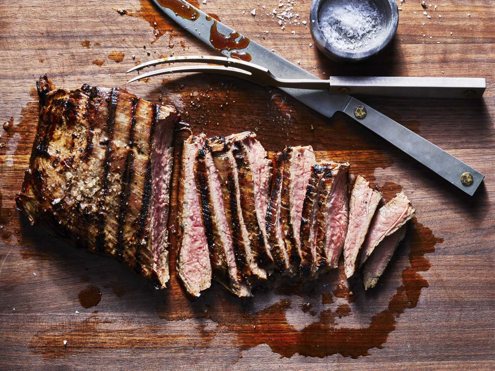

Steak

Description:
A steak is a meat generally sliced across the muscle fibers,
potentially including a bone. It is normally grilled, though it can
also be pan-fried. Steak can also be cooked in sauce, such as in steak
and kidney pie, or minced and formed into patties, such as hamburgers.
(according to
Wikipedia).
(Recipe credit to
recipetineats.com)
Ingredients
-
Thickish cut steak
- no more than 2.5cm/1″ thick, because we want to cook this entirely
on the stove (thicker cuts need to be finished in the oven).
Ideal steaks: boneless rib eye / scotch fillet,
porterhouse / New York, T-bone.
Grade: takes high quality steak over the top amazing,
really elevates economical steak.
- Butter, garlic and fresh thyme
Steps
-
Bring to room temp!
This makes an amazing difference to cooking through evenly rather than
ending up with a thick overcooked band in order for the very centre to
be cooked to your liking;
-
Pat dry
and season the steak generously with salt and pepper – this helps form
that amazing crust we all know and love about great steaks;
-
Get your skillet
SMOKING HOT
before putting the steak in – again, for the crust
-
WARNING:
The butter will sputter when you add the thyme, so stand back!
-
Take the steak off the stove BEFORE your desired internal
temperature (see chart below) because the internal
temperature will continue to rise as it rests
-
REST
your steak for 5 to 10 minutes so it sucks its own juices back in and the fibres relax. This is a must-do step
for any protein you cook hard and fast!